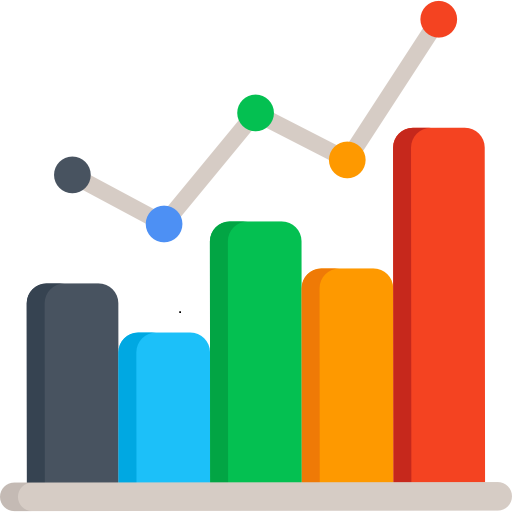

E-Gestor
e-Gestor Atenção Básica para informação e acesso aos sistemas da Atenção Básica. Perfis. Acesso Rápido.

PEC
O PEC é uma solução gratuita, capaz de otimizar o fluxo de atendimento das UBS, além de apoiar o processo de coordenação do cuidado do cidadão realizado pelas Equipes de Atenção Básica.

Centralizador
O centralizador tem a função de reunir os dados de transmissão das instalações PEC e CDS do município, Estado ou região, gerando informação na esfera municipal/estadual e da produção de relatórios.

Painéis Indicadores
Os painéis de indicadores são instrumentos que representam avanços na promoção do conhecimento sobre a Atenção Primária à Saúde, no subsídio à tomada de decisões e na transparência ativa dos indicadores da APS.